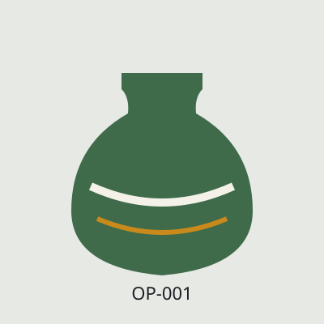

Глечик опішнянський 1,5 л
680 грн
В наявності: 12 шт.
Глечик ручної роботи з червоної глини, покритий прозорою поливою. Тримає прохолоду молока й квасу.
Артикул: OP-001

680 грн
В наявності: 12 шт.
Глечик ручної роботи з червоної глини, покритий прозорою поливою. Тримає прохолоду молока й квасу.
Артикул: OP-001